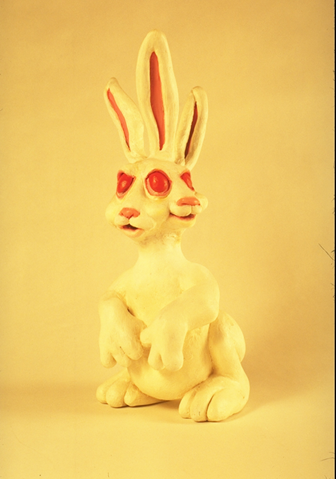

White Rabbit (1994)
Home
1990s
1994
Title:
White Rabbit
Date:
1994
Medium:
Oil on canvas
Dimensions:
Unknown
Work ID:
RE-000228
Signature / marks:
Signed "ENGLISH," lower right.
Reference model

Reference sculpture created by Ron English and photographed as a model for
White Rabbit
.